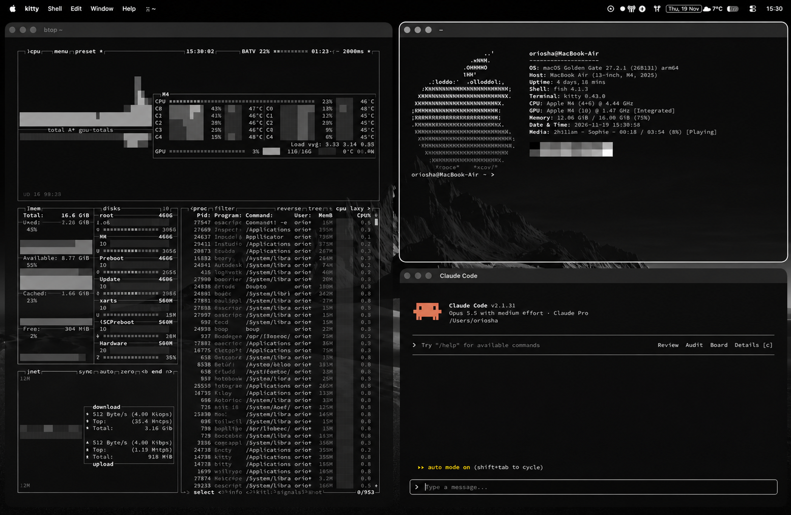
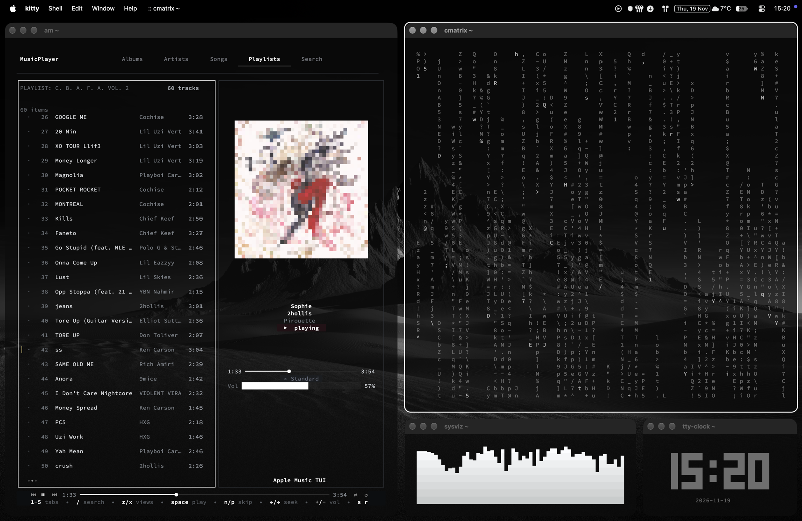

monochrome-macos-rice
A black, white and grey terminal setup for macOS. Clone it, run one script.

btop, fastfetch and Claude Code, all in greys.

Apple Music in the terminal, cmatrix, sysviz and tty-clock, all in greys.
What's inside
kitty
Hasklug Nerd Font, 75% background opacity, grey theme.
fish
fastfetch on start, and short aliases: ls runs lsd, cat runs bat, grep runs rg, am starts the music player.
cberry
A tiling window manager built from cranberry. Patched so its shortcuts still work while a non-Latin keyboard layout (such as Russian) is active. Runs as a login service.
sysviz
A terminal audio visualizer. Needs macOS 14.2 or newer.
fastfetch
System info in greys.
Rice Settings
A small native app for the look and the cberry rules. Opens with Opt+U or setup.
AppleMusicTUI
Apple Music in the terminal (musicplayer, started with am), recoloured white, with a lyrics view (l).
Safe to re-run
Unchanged files are skipped, changed ones are backed up first. Nothing is deleted.
Visible progress
Long builds show a live status line. Full logs go to ~/.local/state/monochrome-macos-rice/logs.
Install
git clone https://github.com/orioshavfx/macos-monochrome-rice.git
cd monochrome-macos-rice && ./install.shmacOS only. The script installs Xcode Command Line Tools and Homebrew if they are missing. It may ask for your password.
Two steps by hand
- Accessibility for cberry. System Settings → Privacy & Security → Accessibility: add
~/bin/cberry, then runcberry restart. After each rebuild of the rice, do this again. - Hide Others shortcut. Reassign Cmd+Opt+H (macOS Hide Others), which clashes with the cberry resize binds.
Privacy
The lyrics view sends the track title and artist to lrclib.net.
Credits
- cranberry by emreekici3, MIT
- AppleMusicTUI by Sebastian Reategui, MIT
- sysviz by orioshavfx, MIT
- fisher by Jorge Bucaran, MIT